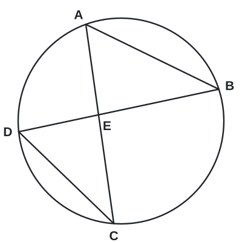

בסרטוט שלפניכם מעגל בו הועברו 4 מיתרים.
נתון: שטח המשולש DEC גדול פי 43 משטח משולש AEB.AE = 6 ס"מ.
לאור נתונים אלו ונתוני הסרטוט, מה אורכה של הצלע DE (בס"מ)?
הצגת הפתרון
התשובה הסופיתתשובה (3)4√3
דרך הפתרון והסבר
המיתרים AC ו־BD נחתכים בנקודה E, ונוצרים שני משולשים: AEB ו־DEC.נראה שהמשולשים דומים:∢BAC = ∢BDC: שתיהן זוויות היקפיות שנשענות על אותה קשת BC.∢AEB = ∢DEC: זוויות קודקודיות.שתי זוויות שוות מספיקות לדמיון: △AEB ∼ △DEC.התאמת הקודקודים לפי הזוויות השוות: A ↔ D, E ↔ E, B ↔ C.לכן הצלע AE מתאימה לצלע DE.יחס השטחים של משולשים דומים הוא ריבוע יחס הדמיון:S DECS AEB = 43 ⇐ יחס הדמיון הוא √43 = 2√3.נחשב את DE:DE = AE · 2√3 = 6 · 2√3 = 12√312√3 = 12√33 = 4√3התשובה: DE = 4√3 ס"מ.
מוקשים נפוצים
להתאים קודקודים לפי הזוויות השוות ולא לפי סדר האותיות: A מתאים ל־D, ולכן AE מתאים ל־DE.יחס השטחים הוא ריבוע יחס הצלעות – לא לכפול ישר ב־43.
נבדקהפתרון תואם את מפתח התשובות של הספר.